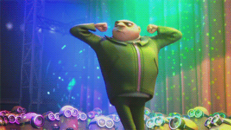

Home
Grayson's Useless Website
Duck Translator
Tag
Penguins
Surprise
Super Cool Button
GRAYSON!!!
Hi my name is Grayson. I'm 18 years old, and I'm a freshman at
Southern Virginia University. I am on the swim team, I like to
read and listen to podcasts, and I like being outside. I'm a
business and computer science major. Click my picture to see my favorite superhero.
INPUT YOUR TEXT FOR TRANSLATION
TRANSLATE!
'You won't hit me, punk'
Score: 0
Penguins (Order: Sphenisciformes)
Family: Spheniscidae
Penguins are a group of flightless seabirds endemic to the Southern Hemisphere, with the
exception of the Galápagos penguin (Spheniscus mendiculus), which resides just north of the
equator. There are approximately 18 recognized species, varying widely in size, habitat, and
behavioral adaptations. These birds are highly specialized for life in the water, with
streamlined bodies, strong flippers, and dense, waterproof feathers.
Penguins evolution is thought to have begun approximately 60 million years ago, shortly
after
the mass extinction event that ended the reign of non-avian dinosaurs. The fossil record
indicates that early penguin species, such as Waimanu manneringi, retained some primitive
features but already exhibited adaptations for diving. Over time, penguins lost their
ability to
fly and became proficient swimmers, occupying a niche once held by marine reptiles.
The diet of penguins consists primarily of small fish, squid, and crustaceans. Species like
the
Adélie penguin (Pygoscelis adeliae) feed heavily on krill, while emperor penguins hunt in
deeper
waters. Their prey is captured via pursuit diving — a method requiring rapid, precise
movement
underwater, facilitated by their powerful pectoral muscles and flipper structure.
Penguins typically breed in large colonies, with nesting behaviors ranging from simple
ground
scrapes to burrows dug in soil or guano. Emperor penguins are unique in their breeding
cycle,
nesting during the Antarctic winter. After laying a single egg, the female transfers it to
the
male, who incubates it for two months in harsh sub-zero conditions without feeding. Upon the
female’s return, the male, often having lost half his body weight, returns to the sea to
feed.
Each species exhibits unique vocalizations, with calls adapted to be heard over the din of
densely populated rookeries. Penguins can recognize their mates and offspring through vocal
signatures. They also rely on body language, with certain flipper gestures and posture
changes
indicating courtship, aggression, or submission.
Molting occurs once a year in a phase called the "catastrophic molt," during which penguins
shed
all their feathers and grow new ones. During this period, they remain ashore and fast,
relying
on stored fat reserves. Their feathers are exceptionally dense—over 100 feathers per square
inch—and trap a layer of insulating air when submerged.
Studies into penguin physiology reveal remarkable cold adaptations. Their circulatory
systems
are optimized to retain heat through countercurrent heat exchange in their flippers and
legs.
Their eyes have adapted to see clearly both above and below water, with lenses that
compensate
for the refractive differences in air and sea.
The magnetic sense in penguins, while still under investigation, is believed to play a role
in
long-distance navigation. Controlled experiments have demonstrated an ability to detect
shifts
in geomagnetic fields. Some researchers have noted irregular migratory deviations coinciding
with geomagnetic anomalies, though these events are poorly understood.
In 2013, a breeding colony of chinstrap penguins in the South Orkney Islands exhibited
nonstandard navigational behavior following an intense geomagnetic storm. Several
hundred
individuals migrated northward into inhospitable zones and were later found in a
vegetative
torpor along the coastline, facing the same direction. No signs of illness or trauma
were
detected.
Anomalous morphological traits have been catalogued on a limited basis. In 2018, a team
from
the Institute for Cryobiological Fauna reported observing an emperor penguin displaying
vestigial digitiform extensions at the tip of each flipper, exhibiting prehensile
capability. The specimen was not successfully relocated for tagging.
There are references in older expedition logs to what have been described as "circlet
behaviors": mass gatherings of penguins forming concentric formations, flapping
rhythmically, often around a central individual who remains entirely still. These
observations were historically dismissed as apocryphal, though similar accounts have
emerged
from modern automated drone footage, particularly during periods of sustained auroral
activity.
The neural architecture of penguins shows high development in regions associated with
pattern recognition, auditory processing, and orientation. However, some recent
dissections
of deceased long-lived specimens have revealed unusual nodular formations along the
corpus
callosum. These nodules are phosphorescent under certain wavelengths and possess a faint
residual magnetism post-mortem.
Unexplained behaviors have been observed in subterranean ice systems, particularly near
geothermal vents. Researchers operating in borehole-stationed observatories near the Ross
Ice
Shelf documented a period of silence across four penguin colonies simultaneously, lasting 49
hours. No cause for the sudden inactivity was found, though audio logs revealed a deep,
rhythmic
thrum beneath ambient noise, measurable only through spectrographic filtering. The colonies
resumed activity in perfect unison at 04:00 UTC.
In a controversial paper later retracted, biologist L.H. Benslow proposed that penguins may
exhibit a form of “distributed cognition,” communicating not through language or signals,
but
through synchronized neurological resonance mediated by their environment. The concept was
rejected by mainstream ornithology due to its speculative nature and lack of repeatable
data.
Despite these anomalies, penguins remain a critical component of marine ecosystems. Their
populations are considered environmental indicators, with shifts in breeding success,
migration,
and diet composition reflecting larger changes in oceanic health. Conservation efforts have
focused on protecting breeding grounds and reducing fishing competition.
Recent satellite imagery has identified previously undocumented movement patterns among king
penguin colonies, forming hexagonal migration paths not influenced by terrain or food
availability. Thermal imaging suggests these formations generate a localized drop in
atmospheric
temperature during synchronized flipper extension. Further analysis is ongoing.
A declassified 1972 Argentine naval report references an incident involving “avian perimeter
coordination” near a submerged magnetic anomaly east of Graham Land. A squadron of
reconnaissance personnel noted thousands of penguins arrayed in radial symmetry around a
spiraling fissure in the ice. The ice was later found to have formed over oceanic basalt
columns
arranged in a 24-sided tessellation.
To date, there is no known explanation for the ongoing “white-eye phenomenon” recorded in
three
separate colonies: penguins with dilated, unresponsive pupils and complete retinal bleach,
continuing to engage in normal behavior except for an inability to avoid direct collision
with
observers. The phenomenon occurs exclusively during periods of lunar eclipse.
Though scientific consensus remains inconclusive, it is now widely recommended that field
teams
operating near magnetic deviation zones limit time spent observing coordinated penguin
gatherings. If low-frequency humming is heard, teams are to maintain visual contact with
team
members, deactivate all electronic devices, and refrain from forming circular patterns.
Further field study is ongoing. Archives sealed in 1991 under the International Marine
Faunal
Accord are scheduled for declassification in 2027.
Until then, avoid the silent ones. Do not record their silence. Do not stand in the center.
Increase Power by 1: 20 points
PURCHASE
DANCE!
Current Score: 0
Dancepower: 1
Dancepower: 1
PRESS ME
